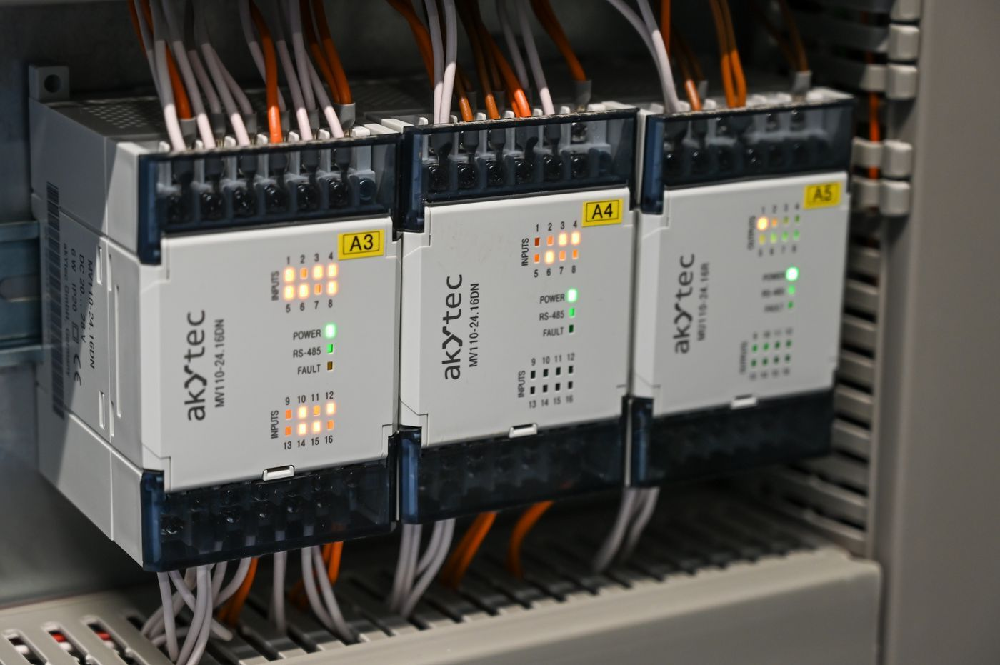

Instrumentation and control
Complete process control instrumentation services for industrial plants.
- Installation
- Installation of process control instrumentation and electronic control systems.
- Project management
- Planning and coordinating instrumentation projects.
- Loop testing
- Instrument loops tested before start-up.
- Start-up
- Bringing instrumentation and control systems into service.
- Maintenance
- Ongoing maintenance of instrumentation and control systems.